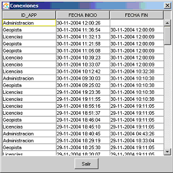

Usuarios
Para acceder a esta pantalla hay que elegir el menú Usuarios/Gestión de usuarios
Operaciones
En esta pantalla se pueden Crear, Modificar y Borrar los datos de los usuarios del sistema. También se puede ver la lista completa de permisos que posee un usuario.
- Crear:
Para crear un usuario nuevo pulsar el botón Añadir, rellenar los datos correspondientes al nuevo
usuario y pulsar el botón Aceptar. No se puede crear un usuario con el mismo nombre que otro y la contraseña debe coincidir con el campo Confirmar contraseña.
- Modificar:
Elegir de la lista el usuario que se quiere modificar. Realizar los cambios oportunos. Pulsar el botón aceptar.
- Borrar:
Elegir un usuario de la lista, pulsar el botón eliminar y confirmar que se quiere eliminar al usuario.
- Ver permisos:
Muestra la lista completa de permisos que posee un usuario, tanto los heredados como los propios.


Los datos que se muestran en esta pantalla son:
- Nombre:
Nombre corto con el que el usuario entrará en las aplicaciones.
- Contraseña:
Palabra clave con la que el usuario se autenticará en las aplicaciones.
- Confirmar contraseña:
Repetición de la palabra clave.
- Nombre completo:
Nombre completo del usuario (nombre, apellidos, etc).
- Descripción:
Breve resumen de las características del usuario.
- Roles:
Grupo al que pertenece el usuario. El usuario heredará todos los permisos de los
grupos a los que pertenezca.
- Acl:
Los permisos están agrupados en acls. Con esta lista se pueden ver los permisos
existentes en el sistema.
- Permisos:
Aquí se pueden añadir permisos al usuario o denegar los permisos que hereda
del rol. Los permisos heredados se muestran en la primera caja.
- Email:
Dirección de correo electrónico del usuario.
- Conexiones:
Pulsando este botón se muestra la pantalla de conexiones donde se pueden
ver las conexiones efectuadas por el usuario seleccionado. Los datos que se muestran son: Identificador de la aplicación
donde el usuario se conecto, hora de inicio de la conexión y hora de fin de la misma.

Permisos
Para modificar los datos en esta pantalla el usuario debe de poseer el
permiso Geopista.Administracion.Edit.
Nota para el administrador
Los usuarios se autentican en el marco de un municipio, si se quiere crear un
superusuario que pueda autenticarse en todos los municipios del sistema debe modificarse la base de datos introduciendo un valor NULL dentro del campo
id_municipio de la tabla iuseruserhdr.